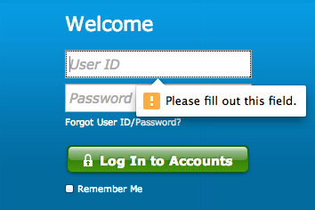

HTML5 Form Validation
Why no one uses it, and how you can!

“No one uses HTML5 form validation”
-Me
What I want
Reality

IKEA

GitHub

Basic HTML5 form validation is easy
<form>
<input type="email" required>
<button>Submit</button>
</form>
Why does no one use it?
Reasons:
- Browser support is weird
- setCustomValidity() is an odd API
- Aggregating error messages is hard
- The :invalid pseudo-selector is tricky to use
- There's no way to declaratively specify error messages
- You cannot style the bubbles